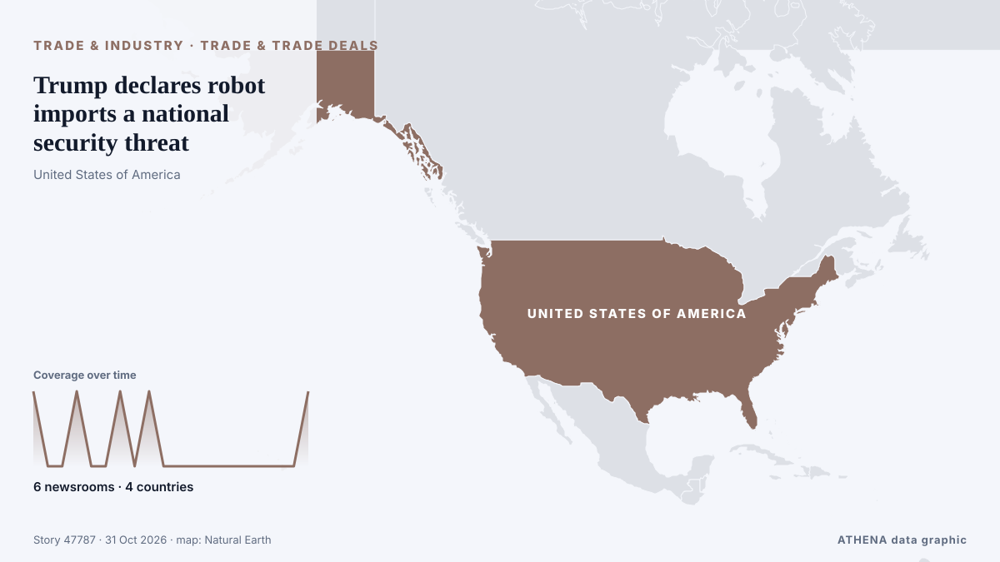

Handel und Abkommen
| 18. Okt. | 1 |
|---|---|
| 19. Okt. | 1 |
| 20. Okt. | 0 |
| 21. Okt. | 1 |
| 22. Okt. | 0 |
| 23. Okt. | 1 |
| 24. Okt. | 1 |
| 25. Okt. | 0 |
| 26. Okt. | 4 |
| 27. Okt. | 2 |
| 28. Okt. | 3 |
| 29. Okt. | 7 |
| 30. Okt. | 3 |
| 31. Okt. | 0 |
Schlagzeilen werden auf Englisch angezeigt, wie veröffentlicht.

Trump declares robot imports a national security threat
President orders trade talks on foreign-made factory robots, threatens tariffs. von Ars Technica
Ghana won’t face fuel queues; supply assured through December – CBOD
Ghana will not experience fuel queues through December, the Chief Executive Officer of the Ghana Chamber of Bulk Oil Distributors (CBOD), Dr Patrick Kwaku Ofori, has assured. von MyJoyOnline
Azerbaijan continues making demands on Armenia
Armenia has reportedly received no new fuel supplies from Azerbaijan in recent months, despite earlier shipments of gasoline and diesel that marked a significant development in trade relations… von AzerNews
Kyrgyzstan would like to receive larger fuel shipments from Russia —oil traders
Kyrgyzstan would like to receive larger shipments of fuel and lubricants from Russia. von 24.kg (English)
48 children murdered in Sri Lanka in three years
A total of 1,664 murders were reported in Sri Lanka over the past three years, including 48 children among the victims, according to Sri Lanka Police. von Daily Mirror
Interview: China's import expo offers showcase for "Made in Cote d'Ivoire," says Ivorian export promotion agency chief
Business Reporter Zimbabwean companies will seek export orders, distribution agreements and strategic partnerships at the ninth China International Import Expo (CIIE) in… von The Herald
Mahama joins African leaders at Russia – Africa Forum in Moscow
President John Dramani Mahama on Wednesday joined fellow African leaders at the Russia –Africa Economic and Humanitarian Forum in Moscow, where Russian President Vladimir Putin called for a fairer… von MyJoyOnline
Smart, green and service-oriented: Canton Fair mirrors new momentum in China's foreign trade
GUANGZHOU, China, Oct. 18, 2026 /PRNewswire/ — Phase 1 of the 140th Canton Fair, themed “Advanced Manufacturing,” opened on October 15 and will run through October 19. von Laotian Times
Ghana targets end to raw mineral exports by 2030 to boost local industry
Ghana has set itself an ambitious target to end the export of unprocessed mineral ores by 2030 as it moves to strengthen in-country processing and manufacturing, transforming its mineral wealth into… von Mongabay
China’s Hulunbuir used-car export hub eyes Pakistan as Chinese NEVs expands global reach
Mongolia is a major supplier of coal and copper to China, the world’s largest consumer of both commodities. von Fortune
PHL sees no impact from Indonesia reduction of gas exports to Singapore
The Philippines has been assured of continued coal and gas supplies from Indonesia, Energy Secretary Sharon… von BusinessWorld
Small and Medium-Sized Businesses Generate 50.9% of Kyrgyzstan’s GDP in 2025
Small and medium-sized businesses accounted for 50.9% of Kyrgyzstan’s gross domestic product (GDP) in 2025, according to preliminary figures from. von The Times of Central Asia
India, Mexico to launch trade deal talks this week
Both India and Mexico have already finalised terms of reference (ToR) for a preferential trade agreement (PTA). von Hindustan Times
Zimbabwe calls on COMESA to shift from policy to practice
Business Reporter INDUSTRY and Commerce Minister Nqobizitha Ndlovu has called on Common Market for Eastern and Southern Africa (COMESA) member states to… von The Herald
How the heart's unusual carbohydrate metabolism helps it stay strong
The heart is the hardest-working muscle in the body, beating constantly no matter what the body's energy reserves look like. von Medical Xpress
Vehicle Imports in Colombia Increased, with China and South Korea Leading as Suppliers
According to the think tank of the National Association of Financial Institutions (ANIF), last August the country’s total imports grew by 31.7% compared to the same month of the previous year, rising… von Colombia One
Uganda Tourism Roadshow Attracts UK Travel Trade in Glasgow
Uganda aims to increase the size of its economy tenfold by 2040, with tourism and other priority sectors playing a central role in its development strategy. von AzerNews